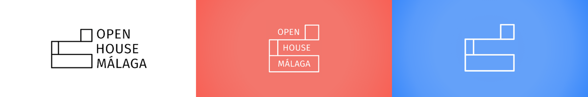
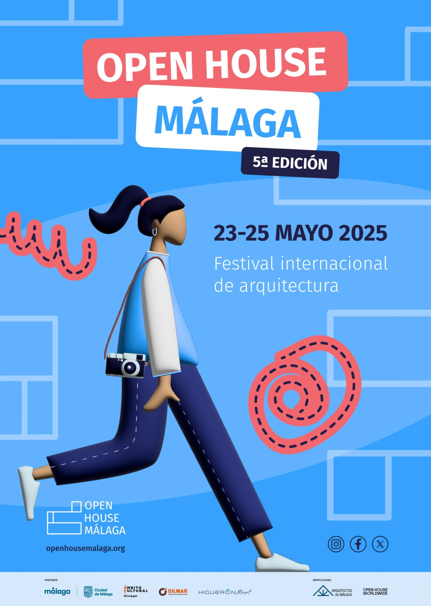
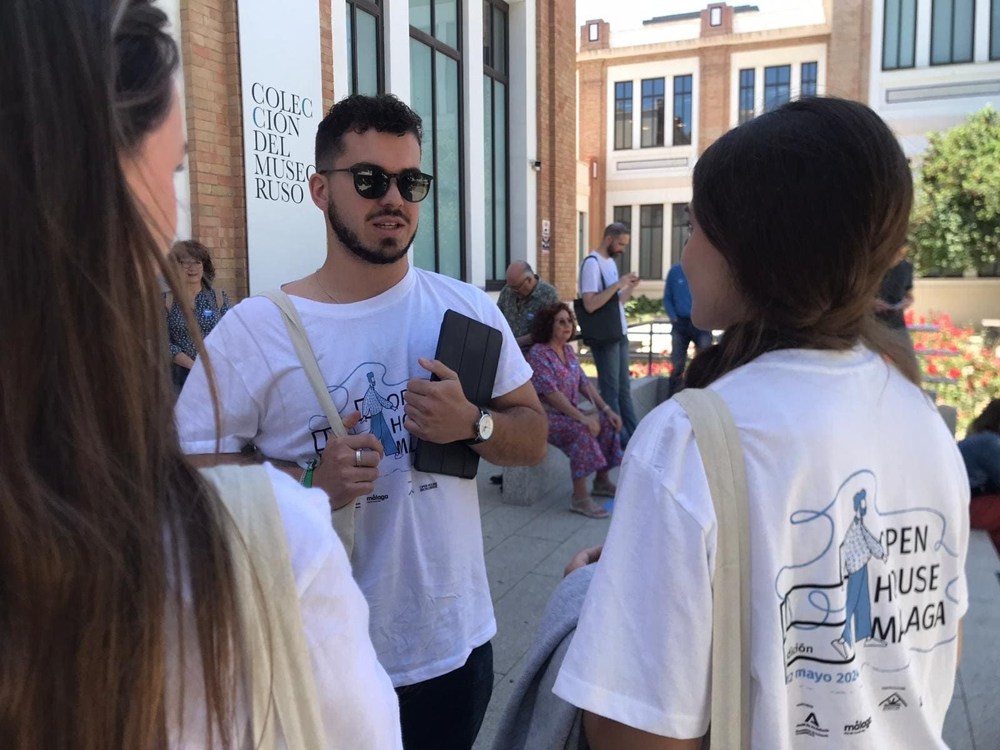
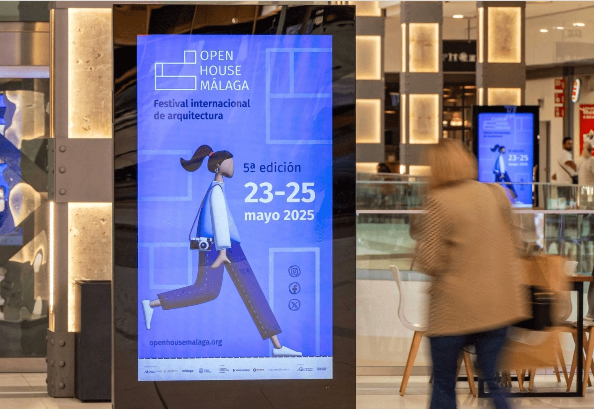
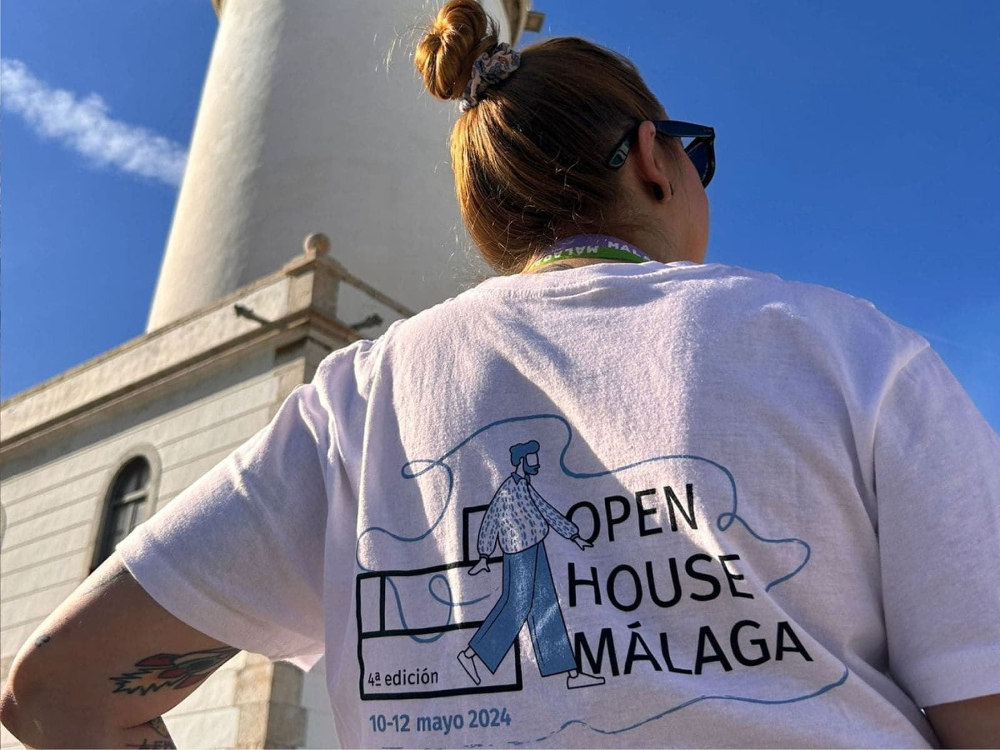
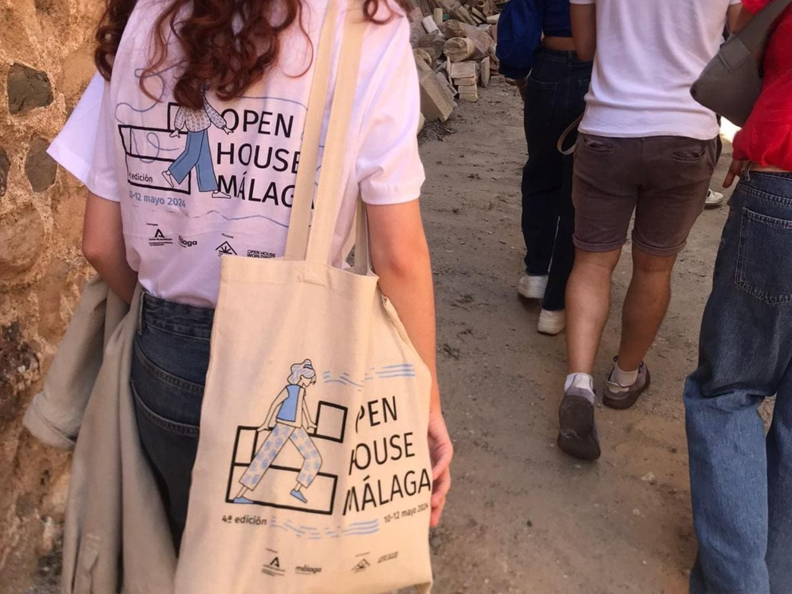
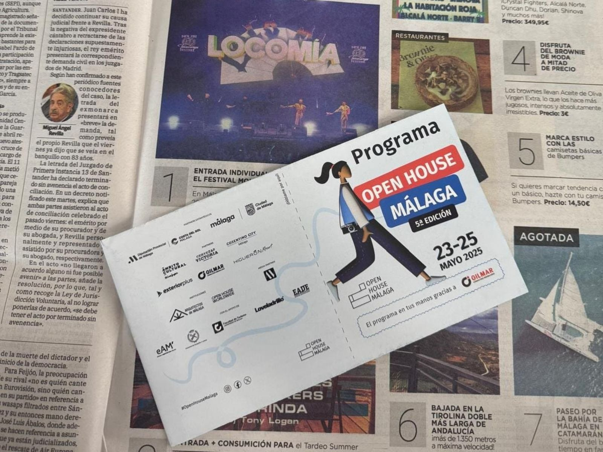
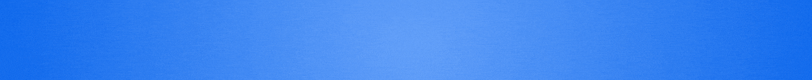

El festival
64 actividades gratuitas
La identidad, en la calle y en las pantallas, para todo el público.
34edificios26rutas4experiencias
Open House Málaga es un festival de arquitectura y ciudad que forma parte de la red internacional Open House Worldwide. Desde 2021 lideré su imagen, desarrollando la identidad visual desde la primera edición —adaptando el sistema gráfico a recorridos, espacios y mensajes del festival— y consolidando una marca reconocible para vivir Málaga desde dentro.
Vídeo animado con código (React + Remotion) y desarrollo asistido por IA.
Formé parte del proyecto de Open House Málaga desde su creación y me encargué del desarrollo de su identidad visual. Desde la primera edición, el festival ha contado con un sistema gráfico propio, diseñado para adaptarse a los recorridos, espacios y mensajes de cada año.
La identidad se construye a partir de la estructura icónica del Centro Pompidou de Málaga, cuya lógica modular dio lugar a un lenguaje visual coherente pero flexible, aplicado de forma continuada a campañas, piezas digitales, publicaciones y señalética del festival.
Este sistema permitió desarrollar una comunicación consistente en todos los formatos: desde soportes digitales y publicidad online y offline, hasta identidad digital, merchandising y web oficial. Además de diseñar la estructura y la interfaz web, me encargué de mantener y actualizar la gráfica, asegurando coherencia visual en toda la experiencia.








Lo que mueve un sistema gráfico pensado para la web, las newsletters, la calle y las pantallas.
La identidad, en la calle y en las pantallas, para todo el público.
Estructura e interfaz de la web del festival.
13 envíos a lo largo de la edición.
En centros comerciales.
Cada pantalla, una pieza
El programa del festival, en papel y en digital.